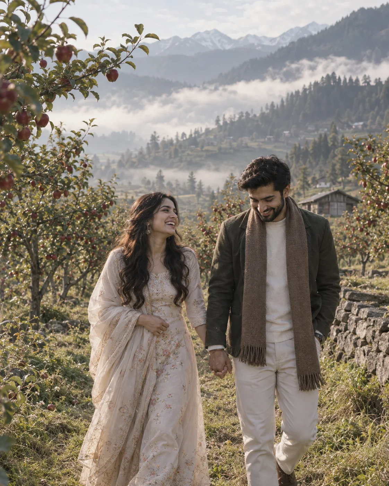
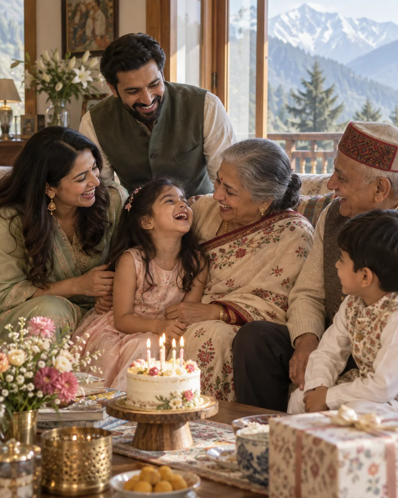
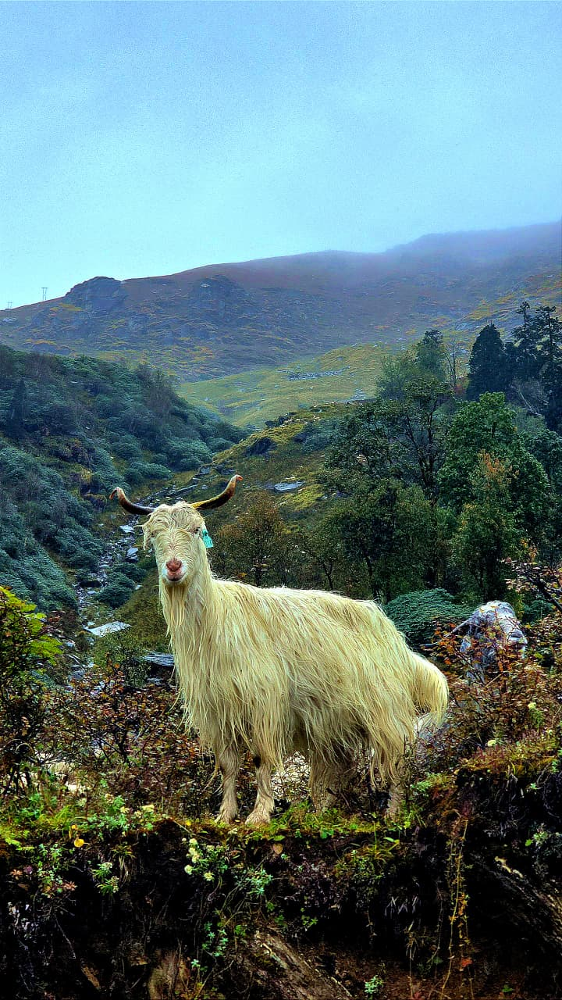
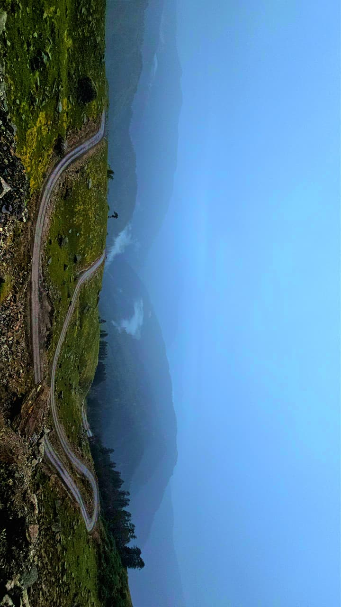
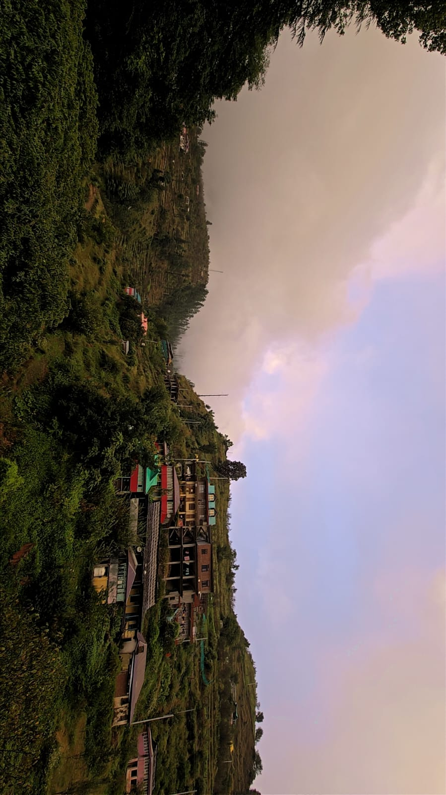

Wedding stories
From the first rituals to the last dance, we preserve the energy, emotion, and people that made your day yours.
Enquire about weddingsWEDDING PHOTOGRAPHY & FILMS · ROHRU, HIMACHAL
Thoughtful photography and films for weddings, celebrations and everything worth remembering. Based in Rohru, serving Shimla and the hills of Himachal Pradesh.
A LITTLE ABOUT US
Life does not pause for the perfect frame. That is what makes the real moments so beautiful.
Led by Govind Singh Chauhan, our Rohru-based studio has spent more than 30 years documenting weddings, family milestones and local stories. From Rohru to the wider Shimla region, we bring experience, care and attention to the people who matter.
Meet us and say helloWHAT WE CREATE
Wedding photography in Rohru, pre-wedding shoots and event coverage across Shimla and Himachal Pradesh—shaped around your plans.
From the first rituals to the last dance, we preserve the energy, emotion, and people that made your day yours.
Enquire about weddingsRelaxed portraits that feel natural, whether we meet in the mountains or somewhere meaningful to you.
Birthdays, retirement gatherings, family occasions, and the once-in-a-lifetime moments in between.
Thoughtful event films, promotional videos, and drone coverage that bring a fresh perspective to your story.
THE FEELING BEHIND THE FRAME
Weddings, quiet moments together and family celebrations—each story has its own beauty.


Good photographs take you back.
Great ones make you feel it all again.
HOW WE WORK
We believe your experience should be as memorable as the photographs. That means a clear plan, a calm presence, and room for real life to unfold.
Tell us about your occasion, your plans, and the details you care about most.
We shape the coverage around your day, so every important moment has space.
Enjoy your people. We will be close when it counts and unobtrusive when it matters.
OUR HOME, YOUR BACKDROP
Our photography studio is based in Rohru, Himachal Pradesh. We cover weddings and events in the Upper Shimla region, including Jubbal, Theog and Kotkhai, and we are happy to hear about celebrations further afield.
Find our studio


GOOD TO KNOW
We are based on Main Street in Rohru, Himachal Pradesh, near Hateshwari Hardware Store.
We serve the Upper Shimla region, including Jubbal, Theog and Kotkhai. Contact us with your date and location to discuss coverage elsewhere in Himachal Pradesh.
We cover weddings, pre-wedding sessions, birthdays, retirement parties and other events. We also offer promotional films and drone shoots.
Call or message us on WhatsApp with your event date, location and the services you need. We will discuss the details with you directly.
LET'S MAKE SOMETHING MEMORABLE
Tell us what you are planning. A wedding, a family celebration, a film idea—whatever the story, we would love to hear it.
Near Hateshwari Hardware Store
Main Street, Rohru
Himachal Pradesh, India